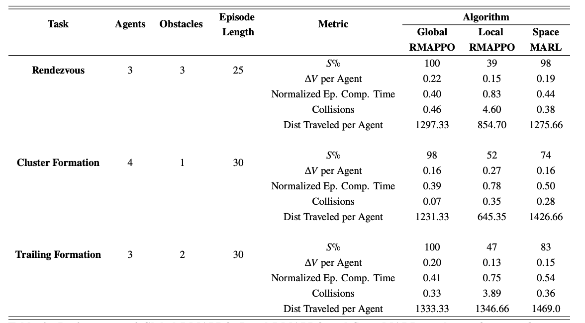
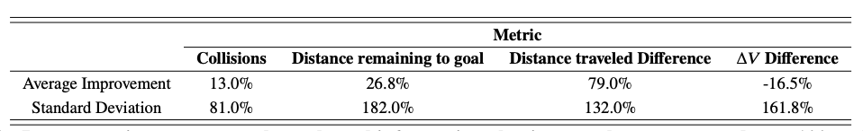

We explore space traffic management as an application of collision-free navigation in multi-agent systems where vehicles have limited observation and communication ranges. We investigate the effectiveness of transferring a collision avoidance multi-agent reinforcement (MARL) model trained on a ground environment to a space one. We demonstrate that the transfer learning model outperforms a model that is trained directly on the space environment. Furthermore, we find that our approach works well even when we consider the perturbations to satellite dynamics caused by the Earth's oblateness. Finally, we show how our methods can be used to evaluate the benefits of information-sharing between satellite operators in order to improve coordination.
The burdening of manual collision avoidance services motivates the development of autonomous decentralized space traffic management. In contrast to traditional centralized conjunction analysis, decentralized traffic management refers to a system where the management and coordination of satellite movements are distributed across multiple independent nodes and entities. In such a system, satellites and satellite operators communicate and collaborate directly with one another to ensure safe navigation and avoid conflicts. Decentralized space traffic management services could enhance the resilience and responsiveness of space operations, enabling faster decision-making, reducing single points of failure, and fostering greater collaboration among international stakeholders in a congested space environment.
This work explores the use of multi-agent reinforcement learning (MARL) techniques to facilitate decentralized space traffic management. We examine the effectiveness of decentralized MARL methodologies in this domain, and introduce our technique, SpaceMARL, a decentralized MARL method that uses graph transformers to augment communication between agents. Through experiments, we demonstrate the strong performance of our method, and its ability to model the value of different pieces of information through its graph formulation.
Figure 1.Graph Neural Network Architecture. Each satellite within the environment is represented as a node, and communications between satellites are represented as edges. Each node represents a particular spacecraft, which means that that specific node can encode specific qualities including size of the spacecraft, its capabilities, and its precise location. Each edge represents communication and sensing abilities, so they can encode qualities related to the relative information between two satellites including their relative distances, the areas they have both surveyed or other characteristics associated with path planning. Our graph formulation is dynamic, meaning that the over the course of the simulation, the satellites can adaptively connect and disconnect with one another depending on the satellites ability to sense those in their proximity. We rely on a unified message passing model (UniMP), a variant of a graph transformer, to allow the agents to selectively prioritize messages coming from their neighbors according to their importance. We use multiple layers of this message-passing so that information can be propagated between agents that are higher-order neighbors with each other.
We compare our method with a few different MARL baselines in the rendezvous environment. The following metrics are compared
Figure 2. Three Control Tasks test in our algorithm
We use the following control tasks:We compare our method against several other MARL baselines in the Rendezvous environment during training.
Figure 3.Comparison of the training performance of SpaceMARL with the best-performing baselines using global and local information. SpaceMARL significantly outperforms most baseline algorithms. Through the use of transfer learning, where the system is initially trained on a ground environment, and then the weights from that environment are applied to the space environment, we can further stabilize training and performance. While RMAPPO has a similar performance, it requires global information. Refer to the paper for a more extended discussion.
Then, in execution, we compare SpaceMARL against the best performing baseline, RMAPPO in each of the three control tasks.
Figure 4. Performance of Global RMAPPO, Local RMAPPO and SpaceMARL on the rendezvous, cluster formation, and trailing formation tasks.
We use our model to evaluate the value of satellites sharing goal information (i.e., sharing their orbits, and any associated changes) with each other. To do this, we consider the SpaceMARL model that was trained from scratch in the space environment. We alter the previous experimental set-up to focus on $N=2$ satellites. We initialize the satellites such that they both have the same distance to travel to their respective goals. Furthermore, their respective initial positions and goals are set so that their most direct path from the start to the goal intersects with the other satellites midway through their path.
To focus on the information learned directly from sharing, we compare two cases: the first in which the satellites are sharing their goal information with each other (the \emph{sharing} case), and the second in which they are not (the \emph{hidden} case). Goal-sharing can be thought of as a proxy for the future movements of the satellite, as it will seek to move towards the goal over the course of an episode. 
Figure 5.Percentage improvements through goal information-sharing, results are averaged over 100 evaluation episodes.
If you find our work or code useful in your research, please consider citing the following:
@article{spacemarl,
author={{Dolan, Sydney and Nayak, Siddharth and Balakrishnan, Hamsa},
journal={Learning for Dynamics and Control Conference},
title={Satellite Navigation and Coordination with Limited Information Sharing},
publisher ={Proceedings of Machine Learning Research},
year={2023},
pages={1058–1071}
}This work is part of a broader research thread around multi-agent coordination with limited information sharing. Other work from the Dynamics INfrastructrue and Mobility Lab (DINaMo) includes
The authors would like to thank the MIT SuperCloud and the Lincoln Laboratory Supercomputing Center for providing high performance computing resources that have contributed to the research results reported within this paper. The NASA University Leadership initiative (grant #80NSSC20M0163) provided funds to assist the authors with their research, but this article solely reflects the opinions and conclusions of its authors and not any NASA entity. This research was sponsored in part by the United States AFRL and the United States Air Force Artificial Intelligence Accelerator and was accomplished under Cooperative Agreement Number FA8750-19-2-1000. The views and conclusions contained in this document are those of the authors and should not be interpreted as representing the official policies, either expressed or implied, of the United States Air Force or the U.S. Government. The U.S. Government is authorized to reproduce and distribute reprints for Government purposes notwithstanding any copyright notion herein. Sydney Dolan was supported by the National Science Foundation Graduate Research Fellowship under Grant No. 1650114.